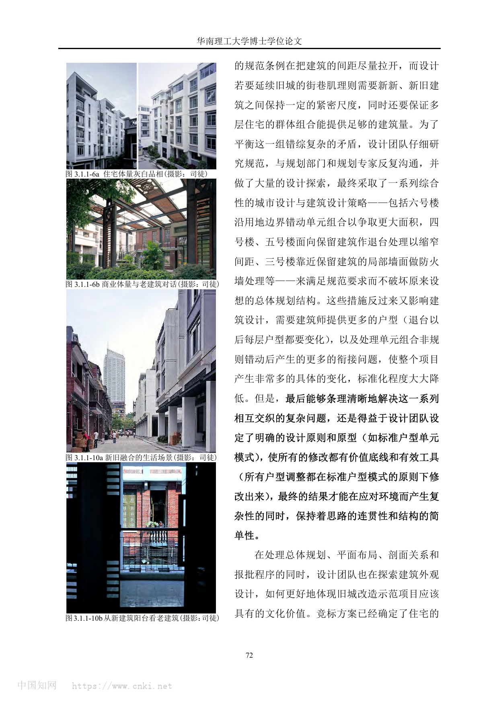

01
基本信息
| 项目名称 | 广州市越秀区解放中路旧城改造 |
|---|---|
| 建筑师 | 张振辉及设计团队（PDF未列明事务所全称） |
| 地点 | 中国广东省广州市越秀区解放中路 |
| 年份 | 2004启动；竣工年份未在PDF中确认 |
| 类型 | Renovation / housing / urban renewal |
| 功能 | 旧城改造、回迁住宅、沿街商业、保留建筑修复 |
| 状态 | 已建成；PDF未列明竣工年份 |
| 面积 | 未确认 |
| 资料可信度 | medium |
关键事实
02
项目概述与设计概念
解放中路旧城改造把政府主导、居民回迁、保留老建筑、延续街巷肌理等复杂条件，转化为街巷结构、标准户型原型和品相对等的建造语言。
资料中的概念
项目通过延续街巷结构、中等密度多层集合住宅、下商上宅剖面、保留建筑修复和新旧材料对话来回应旧城改造试点目标。
综合判断
该案例的核心不是单一风格，而是以街巷结构作为总体底线，以标准户型单元吸收回迁和规范变化，以细部和材料建立新旧建筑的品质对等。
03
核心设计策略
以街巷结构作为旧城更新底线
- 面对的问题
- 项目需要在政府试点、居民回迁、保留老建筑和经济补偿之间建立可实施的更新框架。
- 具体做法
- 总体布局延续并发展原有街巷结构；后续增加住宅量时仍维护保留建筑的城市道路可见性。
- 建筑效果
- 更新不以清空重建为前提，而是在旧城肌理中产生可识别的新旧缝合关系。
- 证据
- 来源明确：PDF p.3-p.4。
- 可迁移方法
- 先建立不可轻易破坏的空间结构底线，再允许局部增量和经济条件在底线内调整。
用标准户型原型吸收复杂变化
- 面对的问题
- 回迁居民对走廊式住宅接受度不足，同时面积可调、明厨明厕、前后通风和邻里交往都需要兼顾。
- 具体做法
- 发展一梯两户标准户型单元，以厨厕和生活阳台组成服务模块，以卧室条带调节面积，并以入户阳台和楼梯组合形成交往空间。
- 建筑效果
- 在户型、组团和密度不断调整时，项目仍保持居住品质目标和清晰空间组织。
- 证据
- 来源明确：PDF p.5。
- 可迁移方法
- 面对不确定需求时，先建立能容纳变化的空间原型，而不是不断累积例外方案。
在规范、密度和肌理之间做综合调停
- 面对的问题
- 防火和日照规范倾向于拉开间距，而旧城街巷肌理需要新旧建筑保持紧密尺度，同时还要保证住宅量。
- 具体做法
- 通过沿边界错动组合、面向保留建筑退台、局部防火墙等措施满足规范，同时维护总体规划结构。
- 建筑效果
- 项目产生大量具体变化，但仍保持思路连贯性和结构简单性。
- 证据
- 来源明确：PDF p.6。
- 可迁移方法
- 规范约束可以转化为体量、户型和新旧关系深化的设计工具。
以品相对等替代仿古或强对比
- 面对的问题
- 新建筑需要与保留的民国红砖建筑对话，但不能简单仿古，也不能用过度现代的玻璃界面切断旧城气质。
- 具体做法
- 住宅采用灰白品相，商业体量使用钢、玻璃、木百叶；立面通过窗洞、阳台、挑台、窗框、栏杆和滴水线等细部组织与生活内容关联。
- 建筑效果
- 新建筑以克制、细腻、生活化的立面组织进入旧城，与保留建筑形成品质层面的默契。
- 证据
- 来源明确：PDF p.7-p.8。
- 可迁移方法
- 历史环境中的新建筑可以追求品质对等和尺度默契，而不是只在仿古或强对比之间选择。
04
场地关系
项目位于广州市越秀区解放中路，是2004年启动的旧城改造试点，目标包括保留有价值老建筑并延续老城文脉和肌理。
岭南地区气候被纳入户型与楼梯间设计，前后通风被用来改善小气候。
05
空间与流线
以原有街巷结构作为总体布局主线，并在住宅量调整中维持保留建筑的城市可见性。
标准户型单元通过服务模块、可调卧室条带、入户阳台与楼梯组合，形成从街道/共享平台到每户入口的公共-私密梯度。
06
结构、材料与建造
PDF确认住宅体量采用灰白品相，沿街商业体量采用钢、玻璃和木百叶等新材质与红砖老建筑对话。
PDF确认局部细部包括水刷石灰色窗框、剁斧石墙基与平台护栏、深灰色金属栏杆和窗框、趟拢门意象入户铁门、檐口滴水勾边等。
07
技术指标
| 场地面积 | ；PDF未提供可靠资料。（unknown） |
|---|---|
| 建筑面积 | ；PDF未提供可靠资料。（unknown） |
| 高度 | ；PDF未提供可靠资料。（unknown） |
| 层数 | 多层集合住宅；PDF说明采用多层集合住宅中等密度策略，但未提供具体层数。（reported） |
| 容积率 | ；PDF未提供可靠资料。（unknown） |
| 建筑密度 | ；PDF未提供可靠资料。（unknown） |
| 结构体系 | ；PDF未提供可靠资料。（unknown） |
| 业主 / 委托方 | 广州市政府主导；执行建设单位为区旧城改造办公室；PDF p.3-p.4提供。（reported） |
| 备注 | PDF未提供完整经济技术指标。 |
主要材料
住宅灰白品相；沿街商业体量使用钢、玻璃和木百叶；细部包含水刷石、剁斧石和深灰色金属构件等。
图纸与摄影信息
PDF图注显示图纸来自设计文件、项目资料或自绘；摄影图注包括司徒。
08
场地信息表
区位角色
Text
广州市越秀区解放中路旧城改造试点，服务于2010年亚运会前的旧城更新探索。
Evidence Type
sourced
Source Ids
当前案例包暂未提供这一组结构化资料。
Related Image Ids
当前案例包暂未提供这一组结构化资料。
自然环境
Text
岭南地区小气候与通风需求被纳入楼梯间和户型组织。
Evidence Type
sourced
Source Ids
当前案例包暂未提供这一组结构化资料。
Related Image Ids
当前案例包暂未提供这一组结构化资料。
文化环境
Text
基地内保留的民国红砖建筑和老城文脉是新建筑形态与材料策略的重要参照。
Evidence Type
sourced
Source Ids
当前案例包暂未提供这一组结构化资料。
Related Image Ids
当前案例包暂未提供这一组结构化资料。
地形条件
Text
PDF未提供地形资料。
Evidence Type
missing
Source Ids
当前案例包暂未提供这一组结构化资料。
Related Image Ids
当前案例包暂未提供这一组结构化资料。
道路与进入
Text
设计坚持从城市道路可明显看到保留建筑，并以街巷结构作为总体布局线索。
Evidence Type
sourced
Source Ids
当前案例包暂未提供这一组结构化资料。
Related Image Ids
当前案例包暂未提供这一组结构化资料。
周边建筑
Text
保留民国红砖建筑和旧城街巷环境构成新建筑立面与体量控制的主要背景。
Evidence Type
sourced
Source Ids
当前案例包暂未提供这一组结构化资料。
Related Image Ids
当前案例包暂未提供这一组结构化资料。
服务人群
Text
回迁居民、沿街商业使用者和旧城公共生活使用者。
Evidence Type
synthesis
Source Ids
当前案例包暂未提供这一组结构化资料。
Related Image Ids
当前案例包暂未提供这一组结构化资料。
场地核心矛盾
Text
回迁住宅量、规范间距、旧城紧密肌理和保留建筑可见性之间的平衡。
Evidence Type
synthesis
Source Ids
当前案例包暂未提供这一组结构化资料。
Related Image Ids
当前案例包暂未提供这一组结构化资料。
09
概念创意探索
诊断
项目面对政府主导旧改、居民自愿回迁或外迁、建筑量补偿政府投资、保留老建筑和延续肌理等多重约束。
定位
设计定位与项目意图契合：延续街巷结构、中等密度多层集合住宅、下商上宅、保留修复和新旧缝合。
策略
以街巷结构为底线，以标准户型为可变原型，以品相对等组织新旧建筑关系。
意象与表达
PDF未给出独立概念口号，但新旧缝合和素雅品相构成主要表达方向。
10
建筑语言生成
功能梳理
项目组织回迁住宅、沿街商业和保留建筑修复，并采用下商上宅剖面分层营造商业与居住环境。
布局逻辑
总体布局延续原有街巷结构，住宅增量服从保留建筑可见性和街巷结构。
形体构成
标准户型单元排列成梳状布局条型体量，灵活嵌入基地肌理或组合成新组团。
场所与氛围
通过入户阳台、楼梯间交往空间、下商上宅剖面和新旧建筑共同营造街巷，改善居住品质并激发旧城活力。
11
建造品质控制
建造语言
PDF未提供结构体系；建筑语言层面确认住宅灰白品相、商业钢玻璃木百叶与红砖老建筑对话。
材料与工艺
水刷石灰色窗框、剁斧石墙基与平台护栏、深灰色金属栏杆和窗框、趟拢门意象入户铁门、檐口滴水勾边共同构成素雅品相。
构造逻辑
构造逻辑从户型生活需求、外墙开洞、空调布置、栏杆和滴水细节中生长出来，而不是独立装饰。
物理性能与施工控制
楼梯间前后通风被用来改善住区小气候；规范层面以退台、错动和局部防火墙回应防火与日照要求。PDF未提供施工控制资料。
12
核心方法提炼
可迁移方法
旧城更新先建立空间结构底线，例如街巷、保留建筑视线、公共通道和生活尺度。
在需求不断变化的项目里，以标准单元原型吸收复杂变化。
历史环境中的当代表达可以通过材料、比例、构造细节和生活内容建立品质对等。
不宜直接照抄
该项目的政府主导、回迁政策和旧改办协调机制具有特定时代背景，不宜直接套用到市场化城市更新。
可转化的分析图
- 街巷结构延续图
- 体量增减取舍图
- 标准户型原型图
- 公共到私密梯度图
- 新旧立面品相对照图
13
图片资料





14
参考来源与信息缺口
- 从概念到建成：建筑设计思维的连贯性研究_张振辉level_a用户提供PDF / 华南理工大学博士学位论文
该PDF为张振辉博士论文中的实践回顾，作者明确说明相关已建项目为其主持设计或全程参加的项目之一；作为设计过程一手回顾使用，但未替代官方竣工资料。
信息缺口与冲突
- 竣工年份：PDF说明项目为2004年启动且属于已建成项目，但未列明竣工年份。
- 经济技术指标：PDF未提供用地面积、建筑面积、容积率、建筑密度、建筑高度、层数和结构体系等硬指标。
- 完整团队与施工资料：PDF以第一人称回顾设计过程，但未列明完整设计单位、合作方、施工过程、样板或质量控制记录。